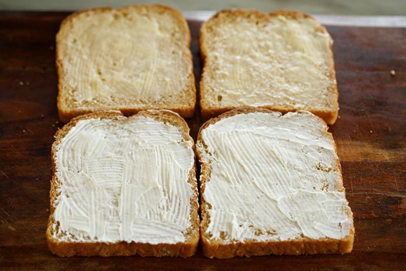
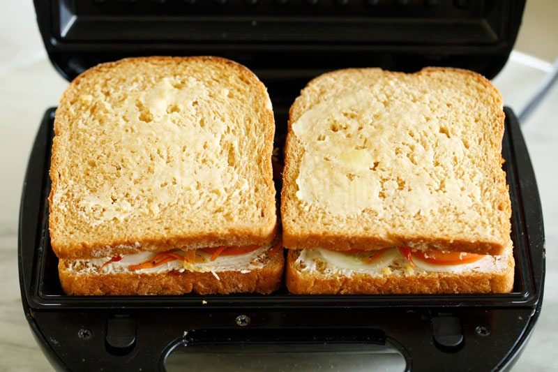
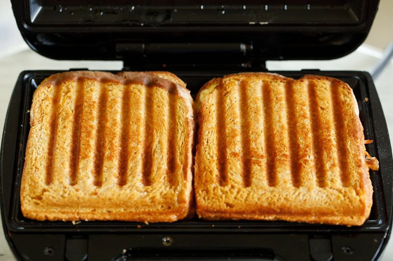

Odin Recipes Homepage
Veg Sandwich Recipe (Mediterranean Style)
This Veg Sandwich recipe is hearty and flavorful. It has sautéed zucchini, mushrooms, bell peppers, carrots and onions along with fresh veggies like tomato and cucumber. Cream cheese and cheddar add richness, while whole wheat bread keeps it wholesome. A Veggie Sandwich you’ll love to make and enjoy.
How to make Vegetable Sandwich
Making this Veg Sandwich is simple. You just need to prep the veggies, sauté them with herbs and spices, and then assemble everything with cheese and spreads between slices of bread. You can toast or grill the sandwich until the cheese melts, or keep it untoasted if you prefer.
Sauté Veggies
- Heat olive oil in a skillet or grill pan and add ⅓ cup cup of sliced onions and
½ teaspoon finely chopped garlic (optional).
Sauté onions and garlic on medium heat for 1 to 2 minutes.
- Add 1 cup of peeled, sliced or chopped zucchini and ½ cup of sliced or chopped mushrooms.
- Add ½ to ¾ cup of sliced bell peppers. Choose any colored bell pepper that you have.
Tip: Always taste a small piece of zucchini after chopping. If it is bitter, don’t use it.
- Mix the vegetables and sauté for 2 to 3 minutes on medium heat.
- Next season with the following herbs and spices:
- ¼ teaspoon dried basil
- ¼ teaspoon dried oregano
- ¼ teaspoon dried parsley
- ¼ teaspoon dried rosemary, optional
- ¼ teaspoon paprika or smoked paprika
- ¼ teaspoon ground black pepper
- salt according to taste
Note: Add 1 teaspoon of Italian herbs or seasoning or mixed herbs instead of adding the dried herbs separately.
- Mix well. Continue to sauté. If the veggies start sticking to pan, add a splash of water. Stir and deglaze.
- Sauté stirring often until tender and lightly browned (4 to 5 minutes). The zucchini slices should look translucent and softened. Meanwhile the mushrooms will also cook.
- Once the veggies are tender, add 1 cup of grated carrots.
- Mix thoroughly and sauté further for 2 to 3 minutes. Turn off the heat and set aside to cool. This mix becomes the flavorful veggie filling for the sandwich.
Prepare The Bread
- Lightly toast the whole wheat bread slices if desired and if you plan not to grill the sandwiches later. Spread softened butter on one side of each slice.
Spread cream cheese on top of the buttered side or on the opposite slice (both combinations work well).

Assemble The Sandwich
- Start with placing cucumber slices on the cream cheese side.
- Next place the tomato slices on top of the cucumber slices on the cream cheese side.
- Layer the prepared sautéed vegetables on top.
- Sprinkle grated or shredded cheddar cheese evenly. Add dried herbs or chili flakes if using.
- Cover with the second slice, butter/cream cheese side facing inward.
Optional: Toast or Grill Vegetable Sandwich
- If you prefer a warm, crisp version, lightly butter the outer surfaces (top and bottom) of the sandwich. Spread some butter on the sandwich maker or panini press if using.

- Place the prepared veggie sandwiches in a preheated panini press or sandwich maker.<\
- Grill in a panini press until golden brown and cheese melts. Otherwise, serve as is. It’s delicious both ways.
You could grill the veggie sandwiches in a skillet or pan too. Similarly assemble the remaining sandwiches and grill or toast them.

Serving Suggestions
Serve this Veg Sandwich hot or warm with a side of herbed Potato Wedges, French Fries, Tomato Soup, ketchup, or a cool yogurt dip. It also pairs well with a simple green salad or a handful of chips if you want something quick.
For packed lunch, let the Vegetable Sandwich cool down slightly, then wrap it in parchment or foil to keep it fresh. Pack the spreads or dips separately and add them just before eating to avoid soggy bread.
Odin Recipes Homepage